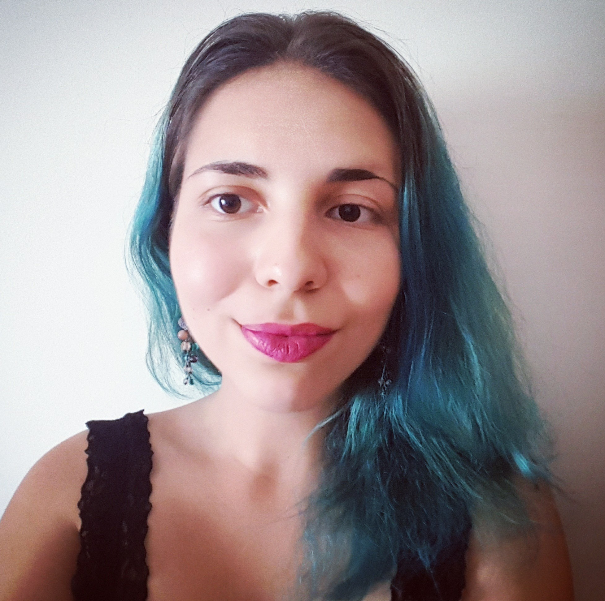

Cătălina Cangea

I'm a second-year PhD student within the Artificial Intelligence Group of the Computer Laboratory, where I am devising cross-modal machine learning algorithms for multimodal data integration, supervised by Prof Pietro Liò (with Dr Mateja Jamnik as my second adviser) and affiliated with King's College.
I graduated from the Computer Science Tripos at the University of Cambridge in 2016 with a First Class result and also hold an MPhil degree (with Distinction) in Advanced Computer Science from the University of Cambridge, as of July 2017.
Publications
Cangea, C.*, Veličković, P.*, Jovanović, N., Kipf, T. and Liò, P. (2018) Towards Sparse Hierarchical Graph Classifiers. Workshop on Relational Representation Learning (R2L) at the 32nd Annual Conference on Neural Information Processing Systems (NIPS 2018).
Cangea, C., Veličković, P. and Liò, P. (2017) XFlow: 1D-2D Cross-modal Deep Neural Networks for Audiovisual Classification. Workshop on Computational Models for Crossmodal Learning (CMCML) at The 7th Joint IEEE International Conference on Development and Learning and on Epigenetic Robotics (IEEE ICDL-EPIROB 2017). [arXiv preprint] [poster]
This work was also presented at the ARM Research Summit 2017, in the poster session.
Work experience and other projects
Research collaborations:
- Summer 2018, Montreal Institute for Learning Algorithms, under the supervision of Dr Aaron Courville.
Software engineering internships:
- July-September 2016, Facebook London, LogDevice team. I optimised client operations on a RocksDB database and implemented a new API required by another team in Facebook.
- July-September 2015, Facebook New York, iOS Product Infrastructure Team. I worked towards delivering a better experience for users of the Facebook iOS app. My project aimed to reduce the time taken to load content close to the area currently being viewed on screen, by improving the prioritization system for network requests.
- June-September 2014, Google Zurich, YouTube Uploads team. I added processing progress for video uploads on several YouTube pages, as the Upload page was the only one displaying this information.
I also took part in Hack Cambridge, winning third place in 2017. We showed that you can trick a face recognition system quite easily, if you've got access to the neural network architecture!
Talks
Graph Convolutional Neural Networks for Web-Scale Recommender Systems. Graph Representation Reading Group, 20 September 2018. Montreal Institute for Learning Algorithms (MILA), University of Montreal
NerveNet: Learning Structured Policy with Graph Neural Networks. Graph Representation Reading Group, 15 August 2018. Montreal Institute for Learning Algorithms (MILA), University of Montreal
Cross-modal Data Integration Techniques. PropagAgeing Workshop Meeting, 7 February 2018 (Also presented at the Women@CL TalkLet, 25 May 2018). Department of Computer Science, University of Cambridge
Cross-modality in Deep Learning for Audiovisual Classification. Computational Biology Group Meeting, 22 January 2018. Department of Computer Science, University of Cambridge
Academic involvement
Each year at the beginning of December, Cambridge colleges carry out admissions interviews for the Computer Science Tripos. This process can last anywhere between a few hours and a whole week(!!!), depending on the number of applicants. I have interviewed CST applicants in 2016 (for Murray Edwards College - a surreal experience, given that only 4 years before I was sat at the same desk, on the opposite side, during my own admissions interview :-)...) and in 2017 (for King's College).
Supervised the following Computer Science Tripos students for their Part II projects:
- Carlos Purves, The PlayStation Reinforcement Learning Environment (2018-19).
- Andrew Wells, Deep Learning for Music Recommendation (2017-18) (76/100).
Also supervise(d) the following undergraduate courses for Murray Edwards, King's, and Queens' Colleges:
- Artificial Intelligence (Easter '17, '19)
- Databases (Michaelmas '17, '18)
- Discrete Mathematics (Michaelmas '17, '18, Lent '18, '19)
- Foundations of Computer Science (Michaelmas '16, '17, '18)
- Logic and Proof (Lent '17, '19)
- Machine Learning and Real-world Data (Lent '18)
External teaching
I am a Machine Learning Teaching Fellow for Cambridge Spark. So far, I have taught the Neural Networks module from the Applied Data Science London Bootcamp.
Outside the department :-)
At the start of my fourth year in Cambridge, I took up rowing and was a member of Darwin College Boat Club until October 2017, racing in Bumps as part of the Women's Second Boat. I'm currently training with the Women's First Boat in King's College Boat Club.
My relentless lifelong passion is music - I play piano and guitar, having been part of Paper Playground (keyboards and backing vocals) ever since early 2017. We perform at pub gigs and the Open Mic nights in Darwin College, having opened for its May Ball in 2017. In 2018, we also played at St John's May Ball.
Contact
Address:
Cătălina Cangea
Office FE14
Artificial Intelligence Group
Department of Computer Science and Technology
University of Cambridge
15 JJ Thomson Avenue
Cambridge CB3 0FD
United Kingdom
Email: Catalina [dot] Cangea [at] cl [dot] cam [dot] ac [dot] uk